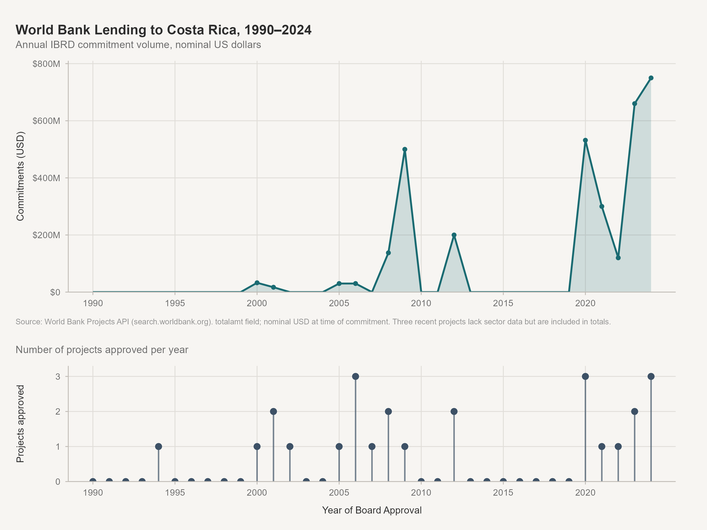
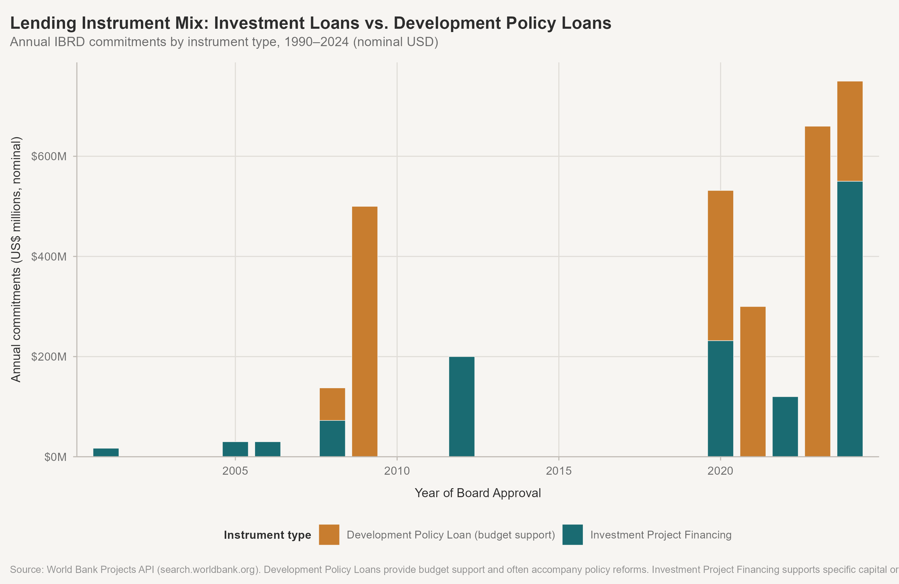
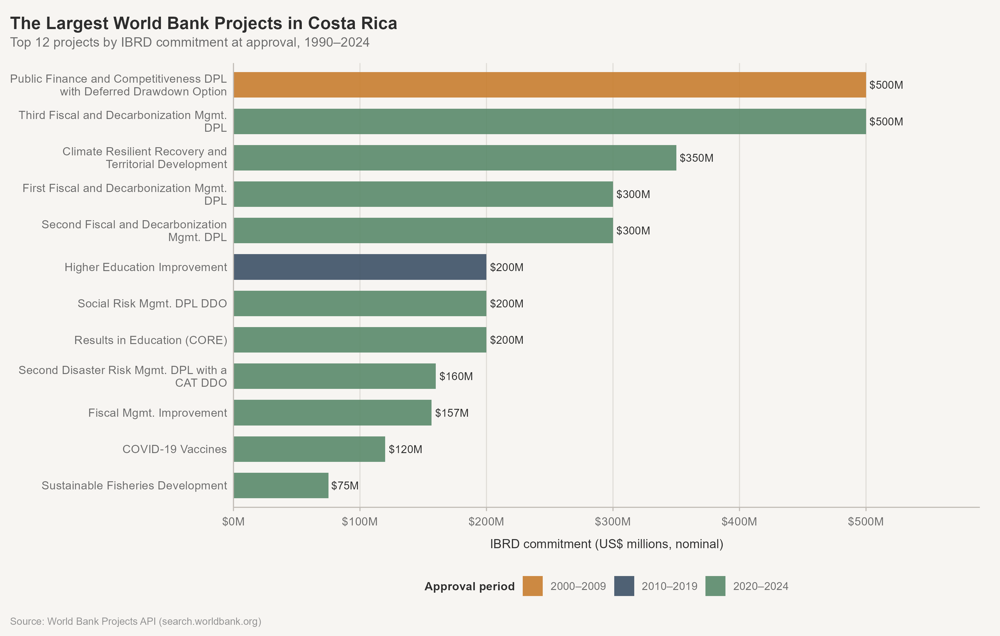
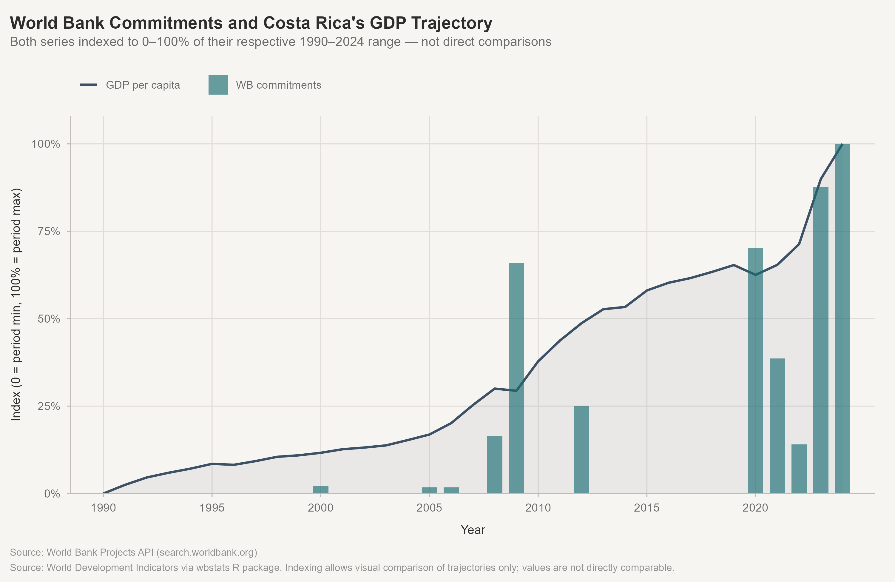

Exploratory Data Analysis
World Bank Lending in Costa Rica, 1990–2024
Data note: 25 of 72 World Bank Costa Rica projects have confirmed approval dates in the 1990–2024 window. An additional 16 projects lack approval dates in the API; most appear to be post-1990 based on their names, but cannot be placed in the timeline. All figures note where this gap affects the analysis. See the Data Audit for full details.
A. Portfolio overview
| Period | Projects | Total commitments | Mean project | Median project | DPL count | IPF count | % of total |
|---|---|---|---|---|---|---|---|
| 1990–1999 | 1 | $0.0B | NA | NA | 0 | 0 | 0.0 |
| 2000–2009 | 12 | $0.7B | $107M | $33M | 2 | 6 | 22.6 |
| 2010–2019 | 2 | $0.2B | $200M | $200M | 0 | 2 | 6.0 |
| 2020–2024 | 10 | $2.4B | $236M | $200M | 5 | 5 | 71.4 |
Key observations:
- 2020–2024 accounts for the largest share of confirmed in-scope commitments by dollar value.
- Project scale increased dramatically from small loans in the 1990s–2000s to $200–500M operations after 2020.
- The surge after 2020 includes the three Fiscal and Decarbonization DPL series, COVID-19 vaccines, and the Climate Resilient Recovery project — a cluster reflecting the pandemic crisis and Costa Rica’s fiscal reform agenda.
B. Instrument mix

| Instrument type | # Projects | Total commitments | % by count | % by value |
|---|---|---|---|---|
| Development Policy Loan | 7 | $2.0B | 28 | 61.2 |
| Investment Project Financing | 13 | $1.3B | 52 | 37.8 |
| Specific Investment Loan | 3 | $0.0B | 12 | 1.0 |
| Technical Assistance | 1 | $0.0B | 4 | 0.0 |
| UNIDENTIFIED | 1 | $0.0B | 4 | 0.0 |
Development Policy Loans (DPLs) are budget-support instruments that transfer funds directly to the government’s general treasury, conditional on policy actions. Their appearance in the portfolio coincides with specific fiscal stress periods: the 2009 global financial crisis and the 2020–2023 COVID and fiscal consolidation period.
C. Sectoral composition

| Period | Sector | # Allocations | Allocated USD | % of period |
|---|---|---|---|---|
| 2000–2009 | Water, Sanitation and Waste | 3 | $64M | 36.4 |
| Agriculture, Fishing & Forestry | 2 | $54M | 30.7 | |
| Education | 2 | $24M | 13.7 | |
| Health | 1 | $16M | 9.2 | |
| Public Administration | 5 | $12M | 6.9 | |
| Transportation | 1 | $5M | 3.0 | |
| 2010–2019 | Education | 1 | $200M | 100.0 |
| 2020–2024 | Public Administration | 9 | $127M | 35.8 |
| Health | 1 | $119M | 33.5 | |
| Agriculture, Fishing & Forestry | 1 | $69M | 19.5 | |
| Water, Sanitation and Waste | 1 | $40M | 11.3 |
Key sectoral patterns:
- Transportation dominated early lending, consistent with highway and infrastructure investment.
- Public Administration and Finance grew substantially in the 2000s and accelerated further with the DPL-heavy post-2020 portfolio (fiscal management, competitiveness).
- Environment and natural resources appear throughout the portfolio in different guises — from early biodiversity/payment-for-services projects to the Decarbonization DPL series.
- Education and health appear as discrete investment projects across multiple periods.
Limitation: Only 3 sector slots are captured per project. Recent projects (2024 approvals) have no sector data in the API, which understates recent sector diversity.
D. Largest projects

The largest project is the Costa Rica Third Fiscal and Decarbonization Management DPL ($500M, 2023). The top projects are concentrated in DPLs and large infrastructure/competitiveness programs.
E. Development priorities in project language

Most frequent words across all abstracts:
| Word | Frequency |
|---|---|
| development | 38 |
| management | 35 |
| social | 20 |
| education | 19 |
| strengthening | 18 |
| covid | 17 |
| operation | 16 |
| policy | 16 |
| public | 16 |
| institutional | 15 |
| services | 15 |
| climate | 14 |
| components | 14 |
| low | 14 |
| capacity | 13 |
| carbon | 13 |
| risk | 13 |
| environmental | 12 |
| forest | 12 |
| improving | 12 |
| supports | 12 |
| sustainable | 12 |
| system | 12 |
| ddo | 11 |
| fiscal | 11 |
Theme observations:
- Infrastructure language is strong in the 1990s–2000s, declining slightly as the portfolio shifts toward policy and fiscal operations.
- Environment and climate language appears in every period — reflecting Costa Rica’s well-known environmental identity — but intensifies in the 2010s and 2020s, particularly in the Decarbonization DPL series.
- Governance and fiscal language surges in the 2020s, driven by the three Fiscal and Decarbonization DPLs and the Fiscal Management Improvement project.
- Disaster risk and resilience language becomes visible only in the 2020s — the CAT DDOs and Climate Resilient Recovery project introduce this framing.
F. Costa Rica’s development trajectory

- GDP per capita grew from approximately $1,800 (1990) to $18,900 (2024), a 930% increase in nominal terms.
- Life expectancy improved from 76.1 years (1990) to 79.3 years (2022), among the highest in Latin America.
- Gini index shows moderate inequality with some reduction over the 2010s, followed by a COVID-related spike around 2020–2021.

G. Findings and interpretation
Finding 1: The portfolio is highly concentrated in time and instrument type
More than 71% of confirmed 1990–2024 commitments were approved in just 2020–2024. This reflects the emergence of very large DPL series ($300–500M each) rather than a gradual escalation. The earlier portfolio consisted primarily of Investment Project Financing in the $15–200M range.
Why it matters: The recent shift toward large DPLs signals a change in the Bank-government relationship — from project-by-project investment toward programmatic budget support tied to policy reform. This warrants investigation into the fiscal context (Costa Rica entered a major fiscal reform process after 2018).
Finding 2: Environmental themes appear consistently, but their framing changes
Environmental and natural resource themes are present across all periods. In the 1990s–2000s, this meant biodiversity conservation and payment-for-environmental-services projects (Ecomarkets, GEF mainstreaming). By 2020–2024, the same environmental commitment is expressed through the Fiscal and Decarbonization DPL series — linking fiscal reform directly to decarbonization.
Why it matters: This suggests Costa Rica’s environmental identity has been institutionalized into its fiscal and macroeconomic policy framework, not just ring-fenced in project-level investments. Whether the Bank is responding to Costa Rican government priorities or helping shape them is a question worth investigating.
Finding 3: A notable gap in the 2013–2019 period (partially an artifact)
The confirmed time series shows almost no projects between 2012 and 2020. Some of this gap is real (World Bank may have had lower engagement during Costa Rica’s pre-reform fiscal stress), but some is an artifact of 16 projects with missing dates. Further investigation — via the WB project website or a different API query — is needed to accurately populate this period.
Why it matters: If Costa Rica was indeed under-served by Bank lending in 2013–2019, this would coincide with the country’s fiscal deterioration (deficits widened substantially from ~3% to ~8% of GDP over this period). The absence of Bank engagement, followed by a massive surge in DPL budget support post-2020, would tell a coherent story about the Bank as a lender-of-last-resort for fiscal adjustment.
Finding 4: Project scale has increased dramatically
The median confirmed in-scope project commitment is $158M. But that median is pulled down by many small projects. The five largest projects are all $200M+, all approved after 2009, and all either DPLs or large infrastructure operations.
Why it matters: This mirrors a global trend in World Bank operations toward fewer but larger operations. Smaller countries like Costa Rica may get fewer but costlier loans, concentrating the policy leverage (and conditionality) in a smaller number of very large transactions.
Finding 5: Costa Rica’s economic trajectory is largely independent of lending volume
GDP per capita and life expectancy improved steadily throughout the period, regardless of lending volume. The Gini index shows modest variation. The largest World Bank commitments do not obviously coincide with turning points in development indicators.
Why it matters: This is consistent with the Bank’s role as a supplemental financier in a middle-income country, not a transformative external actor. Costa Rica’s development record is predominantly domestically driven. The Bank’s leverage is likely concentrated in specific policy reform windows (2009, 2020–2023) rather than broad development outcomes.
H. What the data tells us — and what it cannot
What the data tells us:
- The World Bank has committed approximately $3.3B to 25 confirmed 1990–2024 Costa Rica projects (more if missing-date projects are included).
- The portfolio has shifted from project-level investments in transport, education, and environment to very large budget-support operations focused on fiscal management and decarbonization.
- Environmental and climate themes are embedded across every lending period.
- Disaster risk and resilience language is a recent addition to the portfolio vocabulary.
What the data cannot tell us:
- Whether World Bank projects achieved their stated objectives.
- Whether Bank conditions influenced Costa Rican policy decisions.
- The nature or magnitude of the 2013–2019 gap (missing-date problem).
- How this portfolio compares to other middle-income IBRD borrowers.
- Whether lending caused, responded to, or was independent of macroeconomic changes.
I. Recommended next steps
- Resolve missing-date projects: Query the World Bank project website directly for the 16 projects to recover approval dates and complete the timeline.
- Investigate the 2013–2019 gap: Research whether Costa Rica genuinely had a lean period with the Bank and understand the fiscal context (SAL-era debt, 2018 fiscal reform crisis).
- Explore the Decarbonization DPL series in depth: The three Fiscal and Decarbonization DPLs (2020–2023) are the dominant story of the recent portfolio. What policy conditions did they include? What has the fiscal reform achieved?
- Add inflation adjustment: Deflate nominal amounts using the US GDP deflator or CPI to enable more accurate cross-period comparisons.
- Comparative context: How does Costa Rica’s portfolio composition compare to comparable IBRD borrowers (Panama, Dominican Republic, Colombia)? The World Bank API makes this comparison feasible.
- Primary sources: Supplement this quantitative portrait with project assessment reports (ICRs and ICRRs) from the World Bank’s Operations Portal for the major projects.